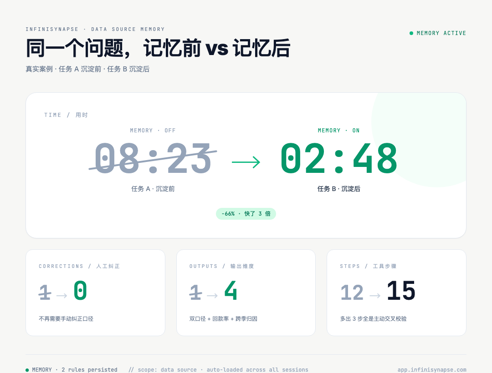
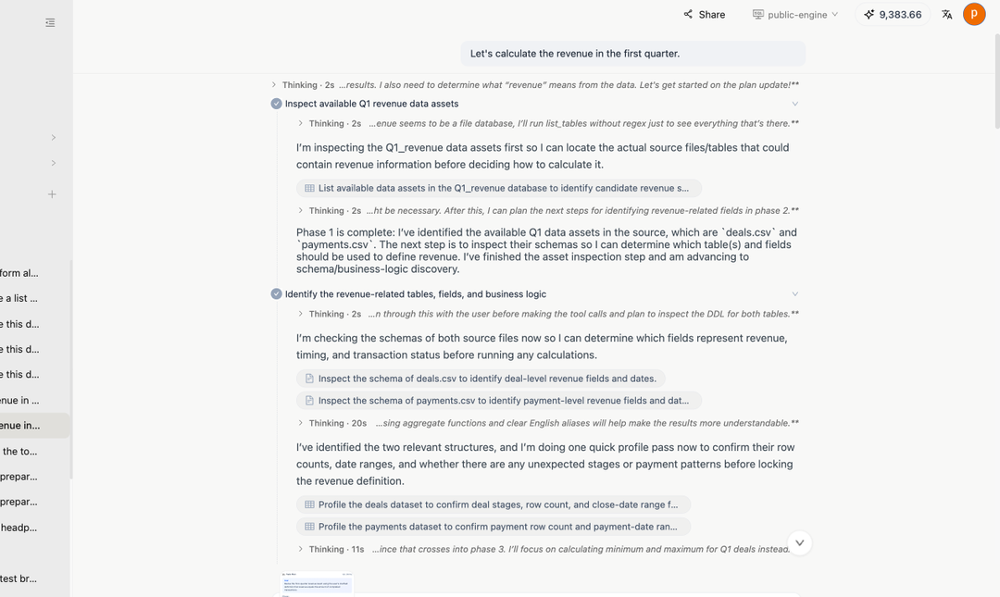
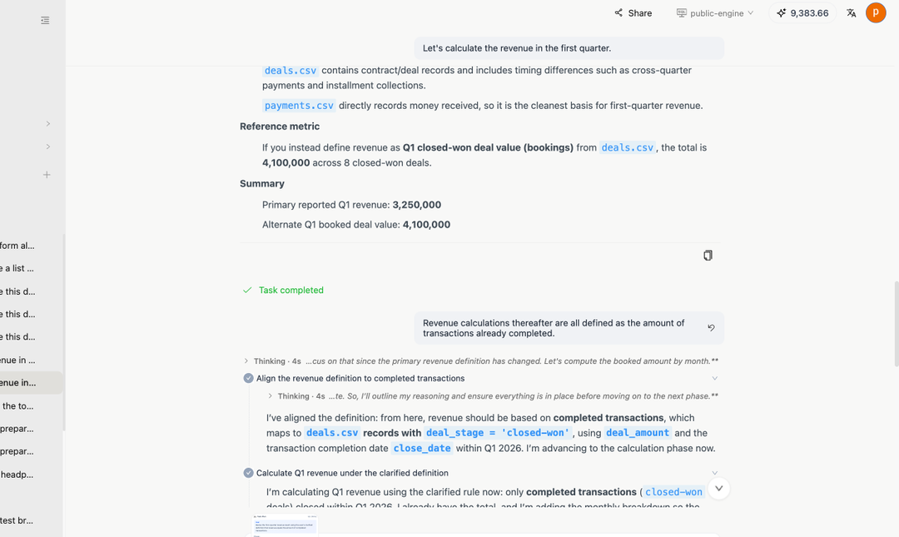
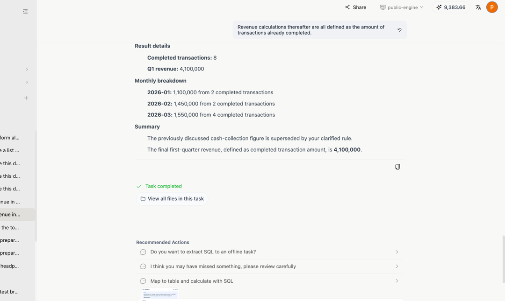
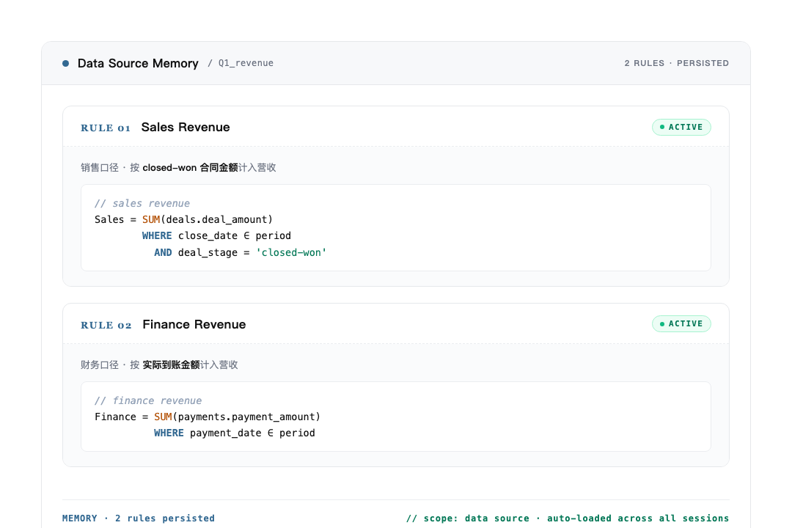
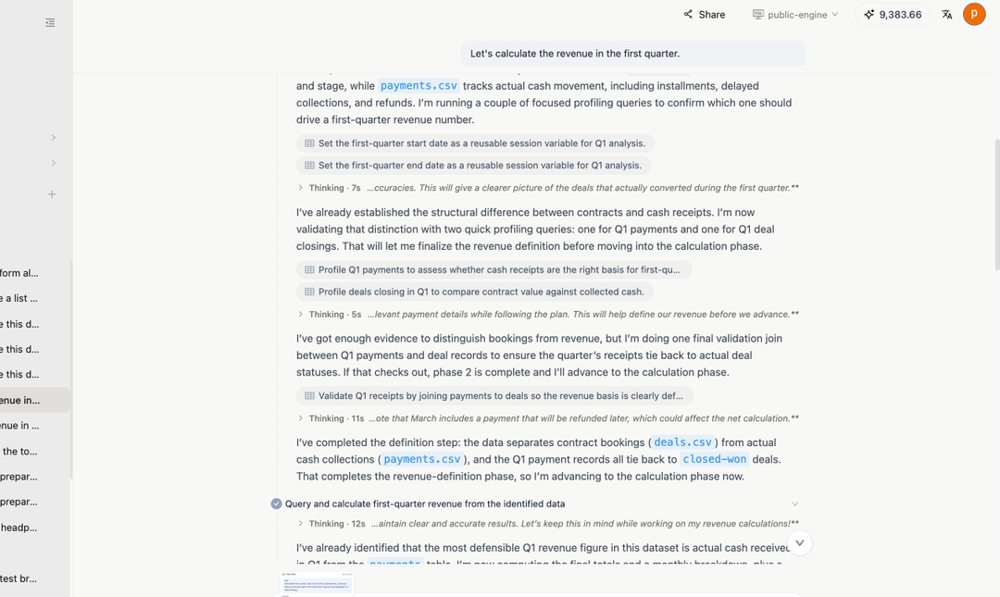
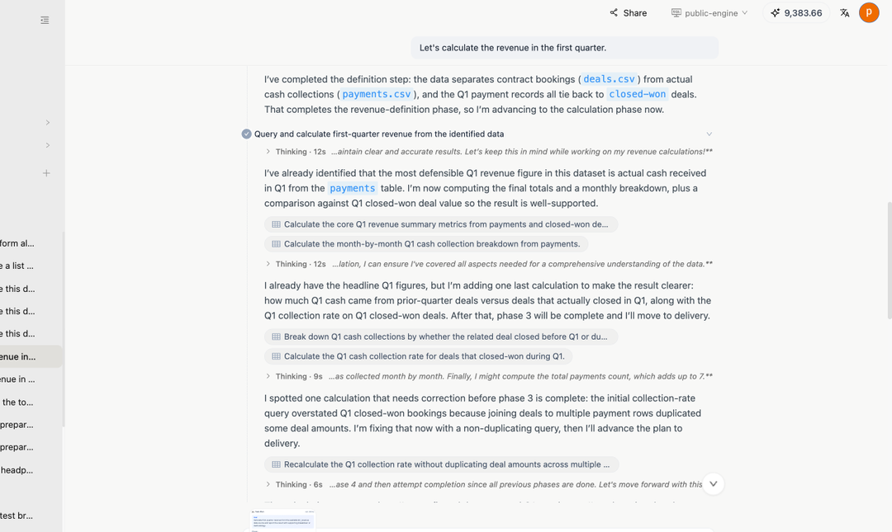
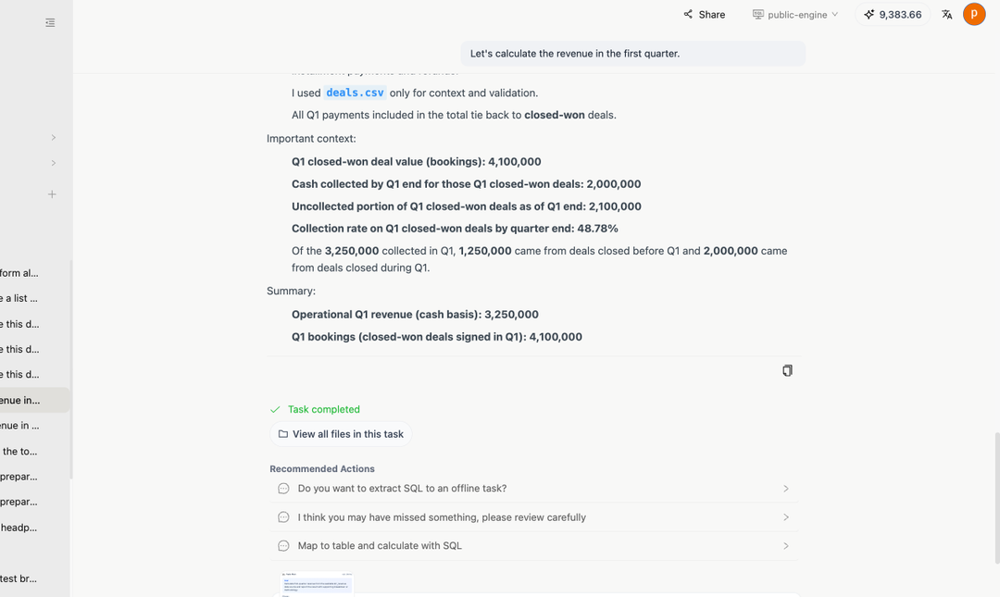

用 AI Agent 做数据分析，最累的从来不是分析本身——是每次都得跟它讲一遍口径。"营收按合同算还是按到账算"、"活跃用户的活跃怎么定义"……讲完这一次，下一次新会话、换个同事来问，它又当没听过。
我们这次给 InfiniSynapse 加了个东西，叫数据源记忆：你跟 Agent 讲过一次的业务规则，自动绑在数据源上。下次任何人在这个数据源上提问， Agent 第一次问就自动加载——不用写 recall ，不用重新解释，就是自动。
下面这个案例就是这么跑出来的。同一句问题、同一份数据，沉淀前 vs 沉淀后， Agent 的表现差到几乎像换了一个工具。文末附两条任务的原始链接，可以点进去自己一步步看。

| 维度 | 沉淀前（任务 A ） | 沉淀后（任务 B ） |
|---|---|---|
| 用时 | 8 分 23 秒 | 2 分 48 秒 |
| 工具步骤 | 12 步（前 6 步在摸底） | 15 步（多出来的全是主动校验） |
| 用户纠正 | 1 次（必须纠口径） | 0 次 |
| 最终输出 | 1 个数字 | 双口径并列 + 回款率 + 跨季归因 |
不是 Agent 突然变聪明了——是给它换了一种喂上下文的方式：业务定义不再写在每次的 prompt 里，而是绑在数据源上、每次 plan 阶段自动注入。
数据特别典型，一个 SaaS 公司常见的场景，两张表：
deals.csv ——销售侧的合同表，关键字段 deal_amount / close_date / deal_stagepayments.csv ——财务侧的回款表，关键字段 payment_amount / payment_date业务上这是同一笔生意的两个面：
SUM(deals.deal_amount) WHERE deal_stage = 'closed-won' AND close_date ∈ period ——合同签了就算SUM(payments.payment_amount) WHERE payment_date ∈ period ——钱到账才算Q1 跑出来：销售口径 410 万、财务口径 325 万、中间差 85 万。两个数字都对，一个看签单速度、一个看回款健康度，本来就应该并列摆出来。
⚡ 难的不是 SQL ，难的是「哪种口径」
这种"同义异口径"的指标企业里到处都是：营收、活跃用户、订单完成、库存可用。每一对都长得像、每一对都不能混。让 Agent 自己记住"哪个数据源上该用哪个口径"，比让它写一段 SQL 难多了。
先看任务 A（链接在文末）。用户问了一句很普通的话：
Let's calculate the revenue in the first quarter.
回车下去， Agent 开始它的"摸底之旅"。前 6 步全是"我先搞清楚这数据源里有啥"：列表名、看 schema 、 profile 字段、检查 deal_stage 有哪些枚举值、看 payment_date 的时间跨度……

这种"先把 schema 搞明白再算"的做法本身没错，是 InfiniSynapse 一贯的风格——宁可慢一点也别瞎算。问题在于：每次新会话都得从头摸一遍。
更扎心的还在后面。摸完底， Agent 默认按 cash basis 算，跑出 325 万。用户一看就不对，必须打断纠正：
Revenue calculations thereafter are all defined as the amount of transactions already completed.

Agent 接到纠正后重算，最后给出来的结果：

整轮 8 分 23 秒 · 12 步 · 1 次纠正 · 输出就一个数字——本该并列的财务口径 325 万也没出现。
如果故事到这里就结束了，那就只是又一次"用完即忘"的 AI 体验。下个月做 Q1 复盘的人——可能是另一个同事，也可能就是你自己——会原原本本再走一遍这 8 分 23 秒。
任务 A 结束的那一瞬间， InfiniSynapse 在背后做了一件大多数 AI 工具不会做的事——把这次对话里和用户对齐过的两套口径，自动存进了这个数据源的记忆里。
你不用做任何事——不用打开面板、不用配置、不用手动写规则。系统自己识别出"这次对话产生了新的业务定义"，把它结构化、绑到数据源上。每条规则的形态特别简单，一段 SQL 语义定义 + 一个 ACTIVE 状态：
// sales revenue
Sales = SUM(deals.deal_amount)
WHERE close_date ∈ period
AND deal_stage = 'closed-won' ACTIVE
// finance revenue
Finance = SUM(payments.payment_amount)
WHERE payment_date ∈ period ACTIVE
MEMORY · 2 rules persisted · scope: data source · auto-loaded across all sessions ——全程零手动配置
这一步看着不起眼，其实是整个功能里最关键的设计——
⚡ 它存的不是对话，也不是答案
不是对话：聊天记录式记忆过去两年试过无数遍，结论是 Agent 没本事从一堆自然语言里准确抽出"当时我们到底定了什么口径"。 不是答案：把"Q1 营收 = 410 万"存进去，下个月数据更新这个数字就过期了。 是算法 + 业务定义：两条规则结构化、可执行、和数据源绑定。下次任何人在这个数据源上问任何"营收"相关的问题， Agent 在 plan 阶段就自动加载——不用 prompt 里写 recall ，不用给上下文。
差异就在这里——聊天历史绑的是用户和会话，数据源记忆绑的是数据本身。
切到一个全新会话，输入和任务 A 一字不差的同一句话：
Let's calculate the revenue in the first quarter.
打开任务 B（链接在文末），可以看到 Agent 这次完全不一样了——它没去 list 表、没去 check 字段枚举，直接进入算数：两套规则被同时加载，并行计算。

接下来更有意思—— Agent 主动做了任务 A 完全没做的事：

它把 payments 和 deals 做了 JOIN ，验证 Q1 的回款和合同到底能不能对上——任务 A 里没出现这一步，因为任务 A 还在纠结"用哪套口径"，根本走不到这种主动校验的层次。
最后的交付一气呵成：

具体输出：
整轮 2 分 48 秒 · 15 步 · 0 纠正 · 输出 4 个维度。
步骤反而多了 3 步——但多出来的这 3 步全是主动交叉校验，不是在重复探查 schema 。这点对比挺有信号：Agent 把省下来的"摸底时间"花在了更有价值的"主动验证"上。
一次沉淀，三个跨度的复利：
这件事在传统 BI 里得靠指标平台 + 指标定义评审 + 上线流程，周期通常是按周算的。数据源记忆把它压成——一次 AI 任务跑完，业务口径自己就沉淀了，下次复用零配置。
「数据源记忆」这五个字真正想表达的就是这个意思：让业务知识在数据源上沉淀、复利，而不是每次都重新讲一遍。
数据源记忆现在全量开放，完全自动、零配置：每跑完一次 AI 任务，对话里对齐过的业务规则自动沉淀到对应数据源；下次任何人在这个数据源上提问， Agent plan 阶段自动加载。
没用过的朋友，最快的体验方式就是直接从下面两条任务的原始链接进去——每一步工具调用、每一段中间产物、 Agent 的每一次思考，都完整留着可以回看。
文中每一张截图、每一段对话、每一个数字，都来自下面这两个任务，点进去就能逐步回看：
任务 A · 沉淀前（ 8 分 23 秒 · 12 步 · 1 次纠正 · 输出 1 个数字）
https://app.infinisynapse.com/tasks?taskId=8908422c-56e6-46cd-88ad-426392986a7a
任务 B · 沉淀后（ 2 分 48 秒 · 15 步 · 0 纠正 · 输出 4 个维度）
https://app.infinisynapse.com/tasks?taskId=9b1a88eb-d2f3-4c66-ac7e-cf50f248ea55